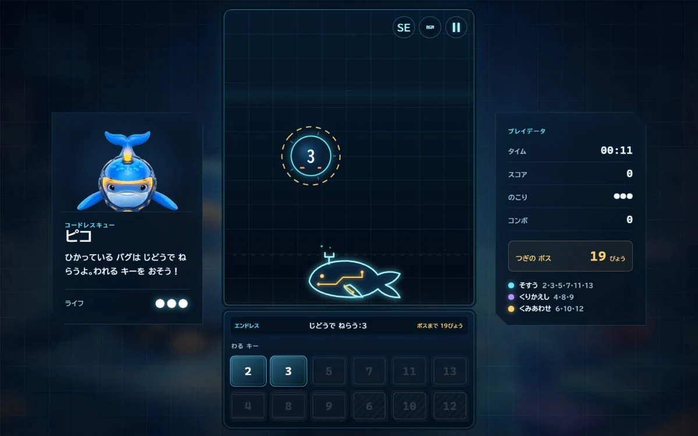

このゲームについて
画面に現れる数字のバグを見て、二・三・五などのキーから割り切れる数を選びます。数字を一まで小さくして修理し、ボスや二つの数を一緒に割る問題にも挑戦します。
遊び方
修理する数字を確認し、割り切れる数のキーを選びます。答えが整数になるキーを続けて使い、数字を一にすると修理完了です。練習、エンドレス、約分の三つの遊び方があります。
ゲーム中に行うこと
- 数字を割り切れる数を判断する
- 大きな数を一まで割る順番を考える
ここではゲーム中の活動を説明しています。能力の向上や、特定の効果・改善を保証するものではありません。